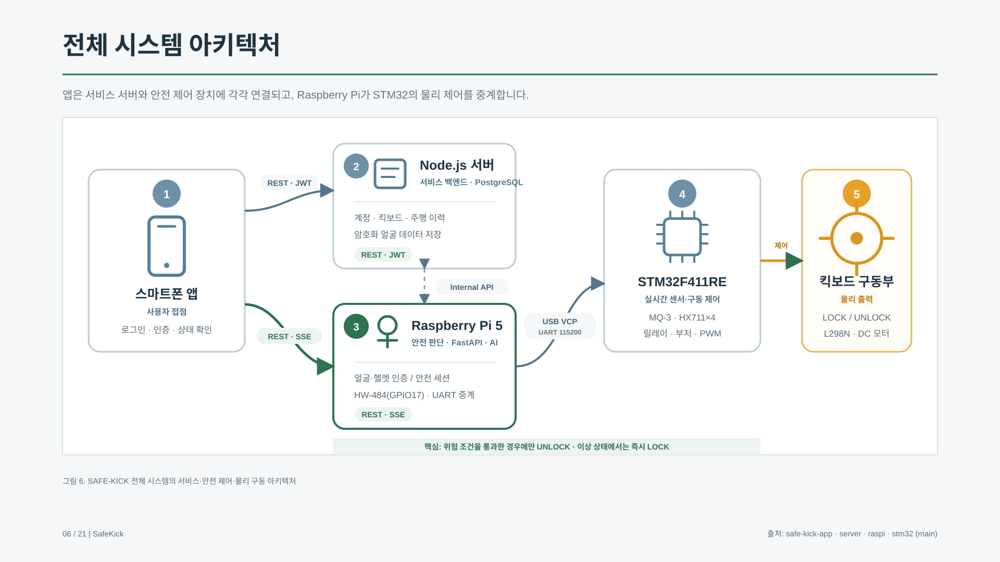
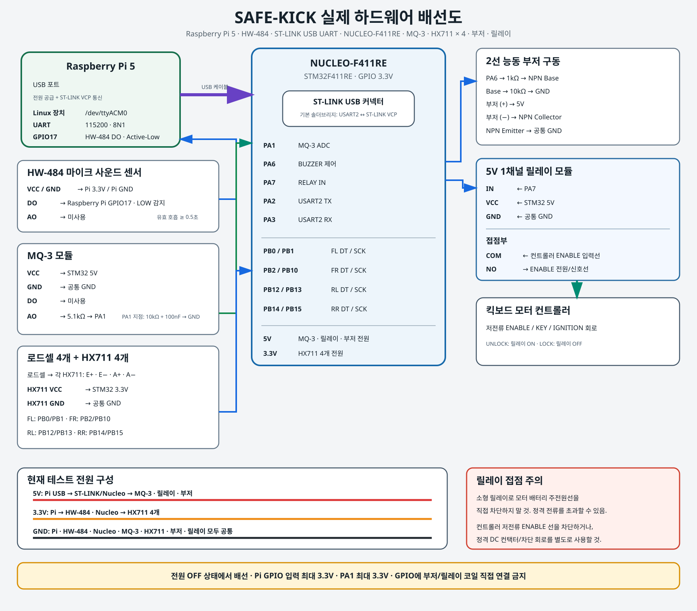
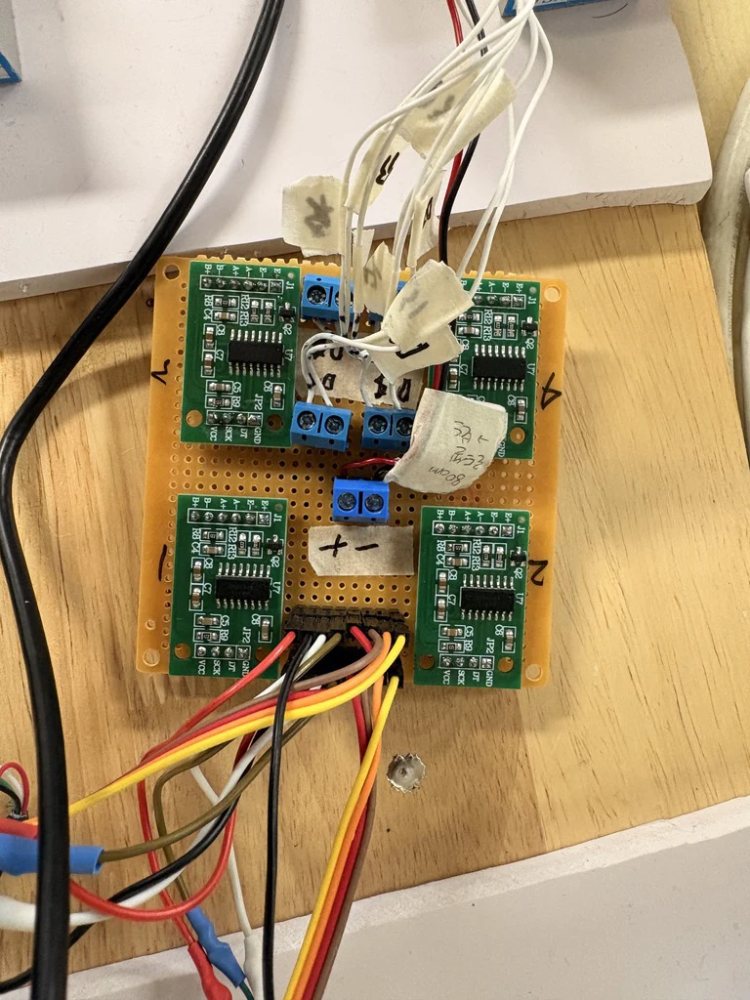

출발 조건을 실제 구동 제어로 연결
본인·헬멧·음주·탑승 조건을 확인하고, 통과한 경우에만 구동을 허용하는 안전 시스템입니다.

전체 시스템
앱과 Node.js 서버가 사용자·대여 정보를 관리합니다. Raspberry Pi는 인증과 안전 상태를 판단하고, STM32는 센서 입력과 모터·릴레이·부저 출력을 제어합니다.
안전 상태와 물리 출력
얼굴·헬멧 인증과 음주·탑승 점검을 순서대로 진행합니다. 운행 중에도 하중 변화를 확인하며 위험 상태나 이상 데이터에서는 LOCK 상태로 전환하는 구조입니다.
나의 담당 범위
회로·센서·구동부 구성, STM32 펌웨어, UART와 Raspberry Pi 장치 통신을 담당했습니다. 앱·서버·AI는 팀원 구현 영역이며 연동 검증은 함께 진행했습니다.
센서를 읽고 모터 출력을 제어하는 MCU
하중과 음주 센서를 수집하고, 상위 판단을 릴레이·PWM 동작으로 바꿨습니다.


센서 입력
MQ-3의 ADC 원시값과 HX711 4채널 로드셀 값을 수집합니다. Raspberry Pi와 UART로 측정값과 명령을 주고받도록 장치 통신을 구성했습니다.
출력 제어
LOCK에서는 PWM 0%와 릴레이 OFF를 적용합니다. UNLOCK 직후에도 출력은 0%로 유지하고 기동 조건을 만족하면 목표 PWM까지 단계적으로 변경합니다.
실물 통합
센서·보드·배터리·L298N·DC 모터를 연결하고 발판의 4점 하중 측정을 구성했습니다. 부저 경고와 릴레이 차단을 소프트웨어 상태에 맞춰 연동했습니다.
편차와 불안정한 측정값을 다루는 방법
영점·기준 추 보정과 다중 표본 수집을 적용하고, 센서 응답이 없을 때는 구동을 제한했습니다.

01 · 로드셀 채널별 편차
채널별 음수 표시와 실제 중량 불일치에 대해 무부하 10회 평균으로 tare를 저장했습니다. 기준 추를 올려 각 채널 scale을 다시 계산하고 무부하 복귀와 기준 중량을 재확인했습니다.
02 · MQ-3 측정 안정화
예열 상태와 baseline 변화 때문에 단일값 판정이 흔들릴 수 있었습니다. 기준값 8회와 실측값 8회를 각각 500 ms 간격으로 수집해 Raspberry Pi에서 여러 표본으로 판단하도록 구성했습니다.
03 · 응답 제한과 차단
보고서의 로드셀 응답 제한은 부팅 tare 1초, 주행 중 200 ms입니다. 센서 이상에서는 LOCK으로 처리하도록 했습니다. MQ-3는 ADC 기반 시제품이며 교정된 혈중알코올농도 측정값은 아닙니다.